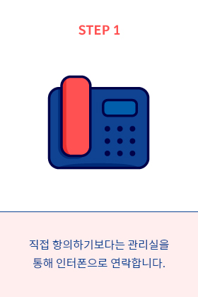
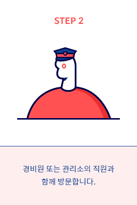

©2019 New media design show

층간소음 예방 방법
기본적으로 이웃과의 관계가 좋을수록 소음은 감소하고 관계가 나쁠수록 소음이
증가하기 때문에, 이웃 간에 서로 대화할 수 있는 분위기와 관계를 만드는 것이 중요하며,
천장 또는 바닥을 향해 보복 소음을 발생시키는 행동으로 갈등을 더욱 키우지 않는다.
오후 10시에서 오전 6시 사이는 주의해주세요.
가급적 늦은 시간에는 샤워와 설거지, 청소기, 세탁기 등의 가정소음이
발생하지 않도록 하며, 악기 연주와 아이의 놀이 활동을 자제합니다.
또한 TV시청과 음악 감상 시에는 음량을 적당하게 조절해요.
망치질, 악기 연주 등은 완화재와 함께 사용해주세요.
망치질은 소음방지 고무패드와 함께 사용하며, 악기 연주 시에는
악기전용 방음장치인 제니오나 소음키퍼를 설치하여 진동으로 인한
소음을 완화시킬 수 있도록 합니다.
동물을 키우는 경우, 일반 주택보다 신경써주세요.
벽에 차음재를 삽입해 일반주택 보다 4cm이상 두껍게 시공하며,
바닥에도 차음시설을 설치하여 동물의 발톱이 바닥을 긁는 소리가
나지 않도록 합니다.
실내용 슬리퍼를 착용해주세요.
밑창 두께가 3cm이상인 슬리퍼를 착용하여 어른의 발걸음, 아이의
뛰는 행동으로 인한 소음을 완화시킬 수 있도록 합니다.
소음 차단에 탁월한 바닥재를 선택해요.
마루보다 소음 차단에 탁월한 장판이나 카펫, 매트 등을 선택하며,
아이를 키우는 경우에는 놀이 매트를 설치합니다.
층간소음 대응방법
궁금하거나 자신에게 필요하다고 생각되는 단계를 선택해보세요.
무엇보다 과도한 항의와 같이 감정적으로 대응하지 않는 것이 중요합니다.
STEP1
STEP2
STEP3
STEP4
©2019 New media design show